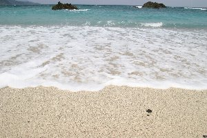
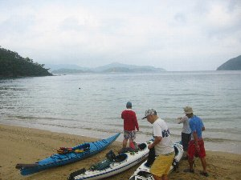
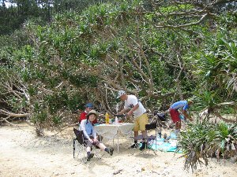
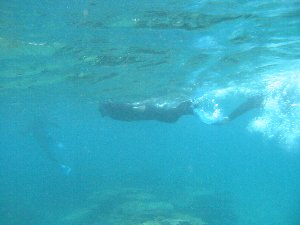
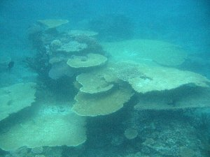

奄美紀行 | 2005年ＧＷ（ゴールデンウィーク） |
|---|---|
| 奄美大島＞鹿児島県だが、鹿児島本土から南へ380Km、沖縄本島から北へ300Km、沖縄本島・佐渡島に続く日本で３番目に大きな島です。元ちとせの故郷として、最近有名になりつつありますね。 ＧＷに、とにかく遊びたい！ そんな気持ちから、友人と奄美アクティビティ計画がＧＷ寸前に持ち上がり、急いで計画を練りました。 飛行機は名古屋からの直行便が無いんです。東京からは一日一便位あるのだが満席。仕方なく名古屋→鹿児島（飛行機）・鹿児島→奄美大島（フェリー）と言う作戦で行くことにしました。ちなみにフェリーは、鹿児島を夕方18：00に出航し翌朝5：00に着くので、時間を大変有効に使えるのだ！ 天気は予報では良くなく、二日目曇り降水確率40％、三日目雨50％、四日目雨70％、五日目曇りという具合に既に梅雨状態。こんなので大丈夫か？と言う不安一杯のスタートです。 一日目（移動日） 連休中とあってフェリーは人の通路が確保出来ない程混んでいました。 | |
|  白い砂浜・青い海（大浜海岸） |  海の中〜証拠証拠！ |
| 二日目 早朝に名瀬港着。ネットで探した激安レンタカー（ 奄美レンタカー ）にて軽自動車を受け取る。なんと、新車が用意されてました！ 走行距離180km！ まだ、奄美までしか走ってないね〜 四日間借りて13,125円！ 午前中は、北側の観光をしました。気温は熱いまでもいかないが、Ｔシャツ一枚、サンダル履きが基本スタイルとなりました。そして午後、待望の体験ダイビング！ 私は沖縄でやっているけど友人は初めてで、かなり緊張している様子。天気はうす曇。雨は降りそうにありません。 今回お世話になった所は「 ティーダ 」という個人経営のショップです。と言うか従業員は居ないようです。お店兼自宅は、奄美の風景にマッチした民家をいじった感じで、田舎のばーちゃん家に遊びに来た感じで、のんびりしています。潜った場所は、初心者と言う事もあり、奄美クレーターと言われる湾内浜辺から。海が透き通っていて綺麗です。 友人がチョッピリ耳抜きに苦労するも、水深7〜8ｍ位まで進みます。そこはニモの世界！ イソギンチャクの中にクマノミが！ 本当にイソギンチャクから出たり入ったりしています。思ったより大きいですね。その他にもコブシメ（コウイカ科）やナマコ等の沢山の魚がいました。上を見上げると、水面がキラキラ光っていて、それを背景に魚が泳いでいる。まさに竜宮城みたいです。 体験ダイビング終了後に遅い昼食を取ることにします。ティーダで教わった奄美で一、二位を争う鶏飯の名店「ひさ倉」へ。ここは、はるか南の民宿の親父も絶賛のお店です。 鶏飯とは、丼にご飯をよそり、そこにほぐした鶏肉や細切り卵焼き等の具を載せて、熱い鶏だしスープをかけ、茶漬けの様にザッザッとかきこむモノです。ダシが利いているのに、あっさりと食べれます。もう、何杯でもOK! ポイントは少な目のご飯に、たっぷりのスープを掛けるのが良いとか。絶品です！奄美に行ったら是非食べてください。 本日の宿は名瀬市のホテル「ビックマリン奄美」。最近出来た建物らしく、大変綺麗です。 夕食は名瀬の鶏料理有名店「鳥しん」へ。ここも鶏飯が有名だそうですが、昼に食べたから他の鶏料理を注文しました。まいう〜です。 | |
 マングローブの間をカヌーで |  マングローブの中をガイドさんが説明してくれます |
| 三日目 午前中は名瀬周辺の大浜海岸を散策。ここも海がエメラルドグリーン！ 白い砂浜で気分は南国です。 午後は場所を移動しまして、マングローブカヌーツアーへ。お世話になったのは「 アイランドサービス 」さん。予報では50％の降水確率だったのに、取りあえず雨は降りそうに無い曇り空。元気良くパドルを漕ぎます。 マングローブの中を漕いだ後に、マングローブ地帯へ上陸。これは引き潮の時にやるイベントだそうで、満潮のときは違うそうです。マングローブは、柔らかい土の上に育つので、裸足で歩くとヌチョとして気持ち良いです。深いところは膝あたりまで沈みます。栄養分が沢山有るので泥パックとしても最適だとか。 当然、生き物も沢山いて、シオマネキ等のカニ類は数種類いました。 本日の宿は「 ダイバー民宿おれんち 」。場所も北のほうから南へと移動し、加計呂麻（カケロマ）島が真近に見えます（南部は携帯が殆ど入りません）。ここの親父が楽しい人で、通称ブッシュマンと呼ばれているそうです。ダイバーであり、漁師でもあり、猟師でもあり、トラック運転手でも有るそうです。もちろん民宿の親父もその一つ。 この日の夕食はバーベキューをしていただきました。肉はナント、ブッシュマンが自分で捕ってきたイノシシ肉！ まいう〜でございます！ それとオニギリが体験ダイビングで見た、コブシメの墨を使って握ってありました。イカ墨スパならぬイカ墨オニギリ。これも絶品です！ バーベキューの後は居間でおしゃべり。他の宿泊客と黒糖焼酎を飲みながら、ダイビング話や狩の話、ハブの話、話題は尽きません。ＴＶなんか無くたって全然かまわない。むしろ無いことに気がつかない。 そろそろ寝るか、と言う頃、ブッシュマンが「明日は雨だな。大シケだ。カヌー揺れるぞ。もう梅雨だからな。雷も鳴るな。」などと脅してきます。そこで、「よし！天気祭りやるぞ！」と焼酎で明日の天気を祈って乾杯！ 飲みたいんだね。 | |
|  これから大島海峡横断！ 中央のぼんやりした島が目的地加計呂麻島 |  加計呂麻島着！ 曇っているけど、透き通った海！分かります？ |
| 四日目 降水確率70％の今日、空は曇り空だけど、どんよりはしてません。本日はシーカヤックで大島海峡を渡って加計呂麻島往復です。かなり今回の旅行の目玉です。 お世話になったのは「 海辺のさんぽ社 」さん。宿で一緒だった女性の方１名と、我々２名の合計客３名！ ガイドさん２名で対応！（ＧＷなのに客いませんね〜こちらは嬉しいが・・） シーカヤック３艇に乗込み、朝10時に出発！ 距離は3〜4kmだそうです。 海峡は一般の船も往来するので、ガイドさんが目を光らせて波を越えて行きます。 一時間ほどで加計呂麻島の無人ビーチに到着！ ここのビーチは、崖に囲まれており、陸路から来れないそうです。 海が本当に透き通るエメラルドグリーン！！ 浜辺に生える名前のわからない木と共に、南国風バッチリです。 お昼はガイドさんが作る特製スパゲティ！ オーシャンビューの席で最高の一時ですね。 | |
|  加計呂麻島で昼食。オーシャンビューです♪ |  珊瑚の直ぐ上をシュノーケル |
| 休憩後、ガイドさんが案内するシュノーケルをやりました。ここはそれ程深くない場所に、珊瑚や熱帯魚がうじゃうじゃです。テーブル珊瑚、青い珊瑚礁、クマノミ、まさに楽園です。もう面白くってやめられません！ ３時半に遠くの雲行きが怪しくなってきたので、早々に帰ることになりました。帰りは追い風なので漕ぐのは大分楽ですね。しかし、波がうねってきたので、艇が揺れます。舳先が波を切り、かぶり、一瞬艇が左に大きく傾き沈しそうになったけど、かろうじて持ちこたえました。雨がザーと10分程降って来て、遠くで雷鳴が轟きました。 30分程で大島に到着。その頃には雨もやみ、撤収には影響も無く助かりました。 本日の宿は、ヤドリ浜のトレーラーハウスを借りました。一人素泊まり3500円。いや〜トレーラーハウスって憧れですよね。なんか。 トレーラーハウスは以外に広く、一番奥にシャワールームとトイレ、手前に来てベットが二つ、キッチンとダイニング、居間とまさにアメリカン！ （造りもアメリカンですが） シャワーのお湯が温かくなったり冷たくなったりと不便さを感じますが、レンジもエアコンも付いてます。 | |
 加計呂麻島 珊瑚礁が真下に見えます |  加計呂麻島 テーブル珊瑚ってやつ？ |
| 五日目 天気うす曇。快晴とはいかないまでも、時折日が差し込むいい天気です。 ヤドリ浜も綺麗な海なので、シュノーケル装備を借りて一日海で遊んでました。加計呂麻ほど海が奇麗ではないが、それでも珊瑚礁や熱帯魚が沢山です！ この日は夜21：20にフェリー出航です。奄美大島ともこれでお別れ。４日間楽しかったです。また来ます！ | |
 トレーラーハウスの中 |  ヤドリ浜 水族館の様に魚沢山です |
| 六日目 朝に鹿児島着、快晴。飛行機は最終の夜20：30発。鹿児島の友人が迎えに来てくれて、一日鹿児島観光しました。 指宿の砂蒸し温泉 （砂の重さがGoodです）に入りながら既にセミの鳴き声を聞き（既にセミが鳴いてます）、昼に 唐船峡のソーメン流し を食べ（ソーメンが美味いよ）、夕飯に黒豚のしゃぶしゃぶを食べてきました。黒豚しゃぶしゃぶ最高に柔らかく美味い！ 茹で過ぎない、若干赤みが残るくらいがBest! 今回の旅行は、雨、雨と言われながらも降られたのは一回だけ。しかも10分くらい。快晴とはいかなかったので、写真はイマイチだが全て予定通りに遊べたので良かったです。傘も持って行ったのに使わなかったしね。（合羽も持って行ったのに） 奄美は都会の忙しいさから解き放たれた異次元空間でした。時間に縛られること無く、まさに「アイタ ペヤペヤ」ですね。第一眼が疲れない。帰ってきてネットをやり始めたら、途端に眼が疲れました。ガイドさんの多くも、島の人ではなく、移り住んだ人と言うのも頷けます。 奄美のベストシーズンは、天気的に7月（ほとんど快晴）、次に8〜10月だそうです。台風にさえ当たらなければOK！ 今回も十分暖かいけどね。 是非とも、また訪れたい場所が一つ増えました。 | |
| コメント＆写真 ｂｙ べっしー | |